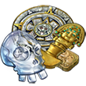
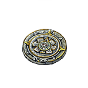
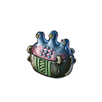
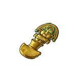
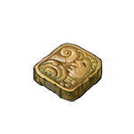
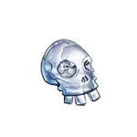

Получено: файл; исходный URL. Иллюстрация в отдельной статье ViveR_9 «Коллекция Майя»; исходный файл без перекодирования. Авторство отдельно не установлено. Страница: источник.
Коллекция Майя
ВКонтакте; дата источника не указана- Тип
- Коллекции
- Версия и дата
- ВКонтакте; дата источника не указана
Элементы коллекции





Данные по источнику · ВКонтакте · дата источника не указана
Предварительно: один источник; требует сверки. Требуется сверка.
- Награда
- Компас и 15 000 монет
- Где копать
- Слоник, пристань на остров Майя, каменное сердце, камни и деревья острова Любви
- Состав (источник Zombie-island)
- Календарь Майя; Хрень; Нож Майя; Оберег Майя; Хрустальный череп.
- Награда (источник Zombie-island)
- 1 Компас; 15000 Монеты.
- Где копать Коллекцию Майя в Зомби Ферме лопатами
- Слоник; Слоник за монеты; Остров Майя; Марафонец; Флаг Марафонца; Плюшевое сердце; Бетонное сердце; Дуб розовый; Пальма 3; Валун маленький; Мост; Весенняя ваза 3; Весенняя ваза 2; Весенняя ваза 1.
- Коллекцию Майя находят Кладоискатели, Рыбаки и Звездочеты
- Кладоискатель; Кладоискатель с мозгами; Звездочет; Звездочет за зомбаксы; Рыбак; Рыбак с мозгами.
- Коллекция Майя может выпасть из ценностей и сокровищ
- Сундук Чудовища 3; Большая бочка; Коллекционер 2; Ледяной дворец за ЗБ; Поисковый.
- Коллекция Майя попадается при колдовании Палочками
- Палочка-выручалочка; Гриб.


Данные по источнику · браузерная версия; платформа не указана · дата редакции не установлена
Предварительно: Содержимое списка: изображения и колонки могут терять смысл при извлечении текста; отдельная страница и дата не проверены. Подписи alt иногда ошибочны.. Требуется сверка.
Данные по источнику · Мой Мир (Mail.ru); историческая таблица · дата редакции не установлена
Предварительно: Источник сам использует знаки вопроса; не следует считать такие места подтверждёнными. Возможны изменения патча и платформы; независимость от других справочников не доказана.. Требуется сверка.
Данные по источнику · браузерная версия; на сайте указана игра ВКонтакте · дата редакции не установлена
Предварительно: Исторический текст; сильно совпадает со справкой Zommbie.at.ua, независимость не доказана. Отрицания и доступность могут измениться с патчем.. Требуется сверка.
- Где искать по странице «Зомбастики»
- Каменное сердце, слоник, деревья на островах Любви и Майя.
Данные по источнику · историческая социальная версия ВКонтакте; редакция неизвестна · дата последующей редакции неизвестна
Предварительно: Фанатская статья; актуальность, вероятности и независимость от других справочников не установлены.. Требуется сверка.
- Состав
- Календарь Майя, Хрень, Нож Майя, Оберег Майя, Хрустальный череп.
- Обмен
- 1 Компас и 15 000 монет.
- Получение
- Задание «Печка», различные Золотые ростки, Поисковый, Сундук Чудовища, Кувшин, Смартфон, Коллекционер 2; перечислены Кладоискатели, Рыбаки и Звездочёты.
- Палочки
- Октавий, Пончик-перевёртыш и несколько неназванных подземных ресурсов.
- Лопаты у друзей
- Флаг Марафонца, Мастер урожая, Плюшевое сердце, Мост, Марафонец, Весенняя ваза, Бетонное сердце, Стол шикарный.
- Применение
- Создание Шерсти и перечисленные задания; количество не указано.
Данные по источнику · историческая браузерная версия, платформа не указана · 10.01.2014 — дата в каталоге; дата редакции материала неизвестна
Предварительно: Фанатский список без вероятностей и уточнения площадки; независимость от других источников не установлена.. Требуется сверка.
- Где искать по списку сайта
- Каменное сердце, слоник, деревья на островах Любви и Майя
- Оговорка
- Список может относиться к разным условиям, инструментам и периодам игры; не доказывает гарантированное выпадение. Заявления «только» и «невозможно» относятся лишь к времени и версии источника.
Данные по источнику · историческая браузерная игра; площадка не уточнена · 26.02.2013 — дата каталога; редакция неизвестна
Предварительно: Проверен текст в каталоге сайта; вероятность выпадения не указана. Исторические версии и даты могут различаться; списки и награды требуют сверки, независимость сайта от других справочников не установлена.. Требуется сверка.
Связанные сущности
нет проверенных связей — требуется сверка.
Источники
- прочитано; проверка 2026-11-21
- прочитано: Zombie-island.moy.su; проверка 2026-11-21
- ZOMBIA: прочитана карточка в списке
- Ссылка на отдельную страницу; отдельно не проверена
- Zombiemail: строка таблицы коллекций; Мой Мир
- Зомбастики: прочитана соответствующая строка; возможная копия другого справочника
- ViveR_9: прочитанная статья коллекции
- zommbie.at.ua: где искать коллекции
- zombi-ferma.ucoz.net: каталог коллекций